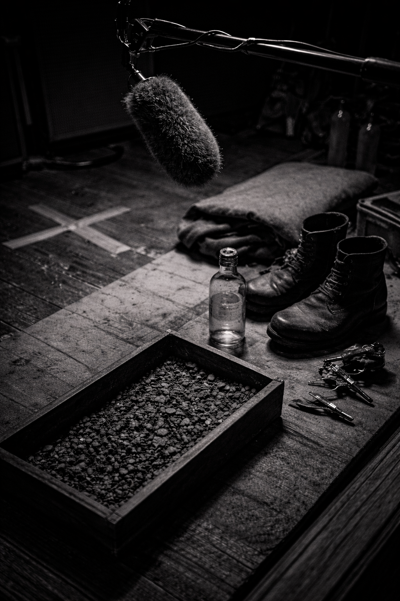

NODAR
SHONIA
Sound Designer // Foley Editor // Composer
SCROLL TO LISTEN
01
Selected Works

FEATURE FILM
2025
LUCKY LU
- ROLE: Foley Editor / Sound Dept
- STUDIO: Postred
- STATUS: Post-Production

TV SERIES
2025
DYING FOR SEX
- ROLE: Foley Editor
- FORMAT: 8 Episodes
- NETWORK: FX / Hulu

FEATURE FILM
2025
THE FAMILY MCMULLEN
- ROLE: Foley Editor
- STUDIO: Postred
- GENRE: Drama
02
Full Credits
Year
Project
Role
Type
The Mastermind
Feature
Foley Editor (Postred)
2025
2025
The Mastermind
Foley Editor (Postred)
Feature
Dying for Sex
Series
Foley Editor
2025
2025
Dying for Sex
Foley Editor
Series
Lucky Lu
Feature
Foley Editor / Sound Dept
2025
2025
Lucky Lu
Foley Editor / Sound Dept
Feature
2025
The Family McMullen
Foley Editor
Feature
2025
M.R.I.
Foley Editor
Short
2024
An Inexact Science
Composer
Music

03 // PROFILE
I BUILD SONIC WORLDS AUDIENCES FEEL BUT NEVER SEE.
With over three years of studio experience at Postred (Georgia, 2022–2025), I specialize in narrative sound for feature films and episodic series. My work bridges raw production audio and the final cinematic mix, ensuring every footstep, texture, and environment serves the story.
Signal Chain
Pro Tools
Reaper
iZotope RX
Soundminer